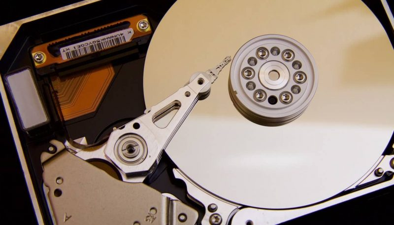

Memoria de Solo Lectura
La memoria de solo lectura, conocida también como ROM (acrónimo en inglés de read-only memory), es un medio de almacenamiento utilizado en ordenadores y dispositivos electrónicos, que permite solo la lectura de la información y no su escritura, independientemente de la presencia o no de una fuente de energía. Los datos almacenados en la ROM no se pueden modificar, o al menos no de manera rápida o fácil. Se utiliza principalmente para contener el firmware (programa que está estrechamente ligado a hardware específico, y es poco probable que requiera actualizaciones frecuentes) u otro contenido vital para el funcionamiento del dispositivo, como los programas que ponen en marcha el ordenador y realizan los diagnósticos.
Teniendo en cuenta que la RAM sirve para que el ordenador o dispositivo móvil gestione los datos de las aplicaciones en funcionamiento, la cantidad que tengas afecta directamente al rendimiento de tu dispositivo. Cuanta más RAM tengas más aplicaciones podrás gestionar a la vez, y de ahí su importancia porque si no hay suficiente el ordenador puede ir lento.Uso para almacenamiento de Software
Los ordenadores domésticos a comienzos de los años 1980 venían con todo su sistema operativo en ROM. No había otra alternativa razonable ya que las unidades de disco eran generalmente opcionales. La actualización a una nueva versión significa usar un soldador o un grupo de interruptores DIP y reemplazar el viejo chip de ROM por uno nuevo. Actualmente los sistemas operativos en general ya no van en ROM. Todavía los ordenadores pueden dejar algunos de sus programas en memoria ROM, pero incluso en este caso, es más frecuente que vaya en memoria flash. Los teléfonos móviles y los asistentes personales digitales (PDA) suelen tener programas en memoria ROM (o por lo menos en memoria flash).
Algunas de las videoconsolas que usan programas basados en la memoria ROM son la Super Nintendo, la Nintendo 64, la Sega Mega Drive o la Game Boy. Estas memorias ROM, pegadas a cajas de plástico aptas para ser utilizadas e introducidas repetidas veces, son conocidas como cartuchos. Por extensión la palabra ROM puede referirse también a un archivo de datos que contenga una imagen del programa que se distribuye normalmente en memoria ROM, como una copia de un cartucho de videojuego.
Uso para almacenamiento de datos
Como la ROM no puede ser modificada (al menos en la antigua versión de máscara), solo resulta apropiada para almacenar datos que no necesiten ser modificados durante la vida de este dispositivo. Con este fin, la ROM se ha utilizado en muchos ordenadores para guardar tablas de consulta, utilizadas para la evaluación de funciones matemáticas y lógicas. Esto era especialmente eficiente cuando la unidad central de procesamiento era lenta y la ROM era barata en comparación con la RAM. De hecho, una razón de que todavía se utilice la memoria ROM para almacenar datos es la velocidad, ya que los discos siguen siendo más lentos. Y lo que es aún más importante, no se puede leer un programa que es necesario para ejecutar un disco desde el propio disco. Por lo tanto, la BIOS, o el sistema de arranque oportuno del PC normalmente se encuentran en una memoria ROM.
No obstante, el uso de la ROM para almacenar grandes cantidades de datos ha ido desapareciendo casi completamente en los ordenadores de propósito general, mientras que la memoria Flash ha ido ocupando este puesto.
Palabras Sabias
 La imaginación es más importante que el conocimiento. El conocimiento es limitado y la imaginación circunda el mundo..
La imaginación es más importante que el conocimiento. El conocimiento es limitado y la imaginación circunda el mundo..
Albert Einstein